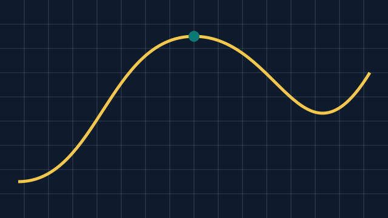
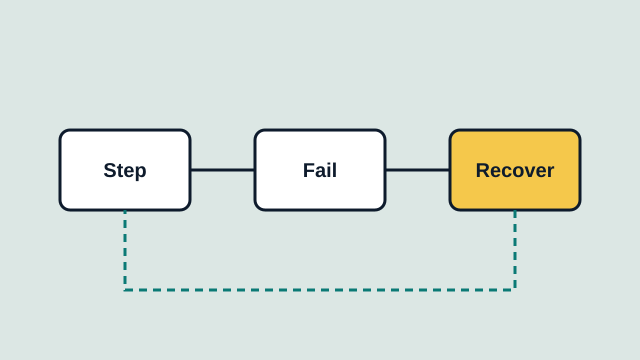
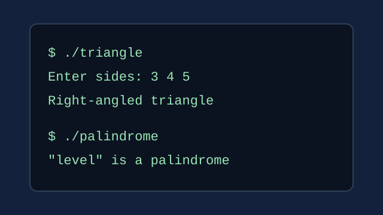

Geometry Under Stress (GUS)
An original framework that treats an AI system's behaviour as a shape, then watches how that shape bends when the system is pushed. The aim is to spot problems before they cause failures.
Three things I've built or am building.

An original framework that treats an AI system's behaviour as a shape, then watches how that shape bends when the system is pushed. The aim is to spot problems before they cause failures.

Recovery middleware for AI agents. When an agent run goes wrong partway through, Consistency helps it get back to a good state instead of starting over. I've tested it with several agent frameworks.

Lab work for COS 102, including a program that classifies triangles and another that checks palindromes. Good practice in conditions, loops and string handling.